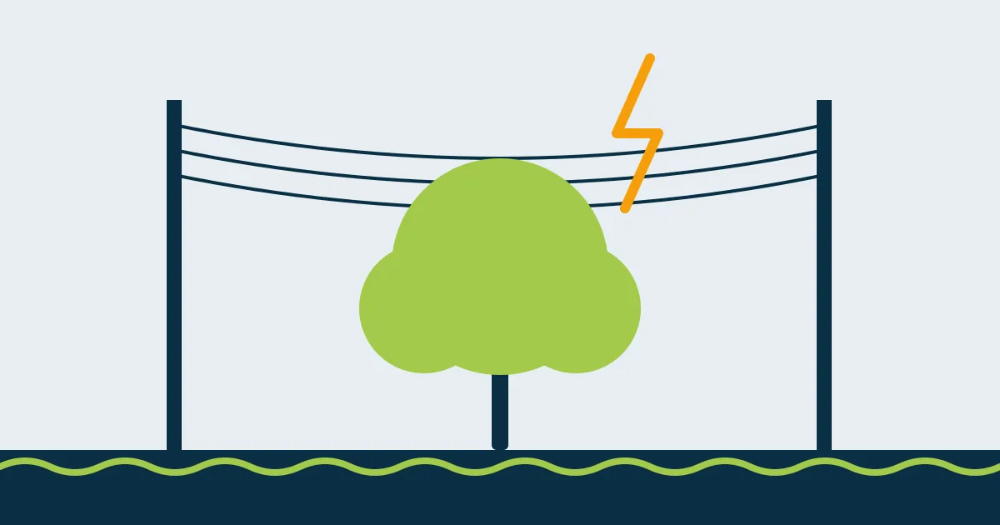

Galhos na rede elétrica: o risco que muita gente só percebe depois da queda de energia

Durante meses o galho fica ali, encostado no fio, balançando com o vento. Ninguém liga. Até o dia em que vem uma chuva forte, a luz pisca, cai, e a rua inteira fica no escuro. Ou pior: o galho quebra e leva o fio junto até o chão.
Árvore e rede elétrica dividem o mesmo espaço em boa parte das ruas da Região dos Lagos. Entender o risco é o primeiro passo para evitar acidentes.
Por que galho e fio não combinam
Madeira verde tem água e conduz eletricidade. Quando um galho encosta em dois fios ou liga um fio a algo aterrado, a corrente passa por ele. Isso provoca:
- Curto-circuito: faíscas, queima de fios e de equipamentos da rede.
- Interrupção de energia: a proteção da rede desliga o trecho, às vezes o bairro todo.
- Oscilações: a luz pisca, aparelhos queimam, o portão eletrônico trava.
- Incêndio: em tempo seco, a faísca pode pegar fogo na própria árvore.
O risco que não aparece: o choque
O maior perigo é para as pessoas. Quem sobe na árvore para “dar uma aparada” perto do fio, ou encosta uma escada de alumínio ou uma vara de poda na rede, pode levar um choque grave. Em redes de média tensão, a eletricidade pode até “saltar” para a ferramenta sem encostar no fio.
Regra de ouro: nunca pode, puxe ou sacuda galhos que estejam encostados ou próximos da rede elétrica. Nem com ferramenta “isolada” comprada em loja.
Quem pode podar perto da rede
Galhos na rede pública de distribuição são assunto da concessionária de energia. Só equipes treinadas para trabalho com eletricidade (exigência da norma regulamentadora NR-10), com equipamento próprio ou com a rede desligada, podem atuar ali.
O caminho é:
- Ligar para a central de atendimento da concessionária (o número está na sua conta de luz) e informar o endereço e o problema.
- Se houver fio no chão, faísca ou fogo: afaste todo mundo, não toque em nada e ligue para a concessionária e para o Corpo de Bombeiros (193).
- Guardar o número do protocolo do atendimento.
E quando a árvore está no meu terreno?
A responsabilidade pela árvore é do dono do imóvel, mas a rede continua sendo da concessionária. Nesses casos, o serviço é feito em parceria: a concessionária desliga ou protege o trecho, e a empresa de poda executa o restante com segurança. Também vale para o ramal de entrada, o fio que vai do poste até a sua casa.
Prevenir é mais barato
A melhor poda perto da rede é a que acontece antes do galho chegar lá. Uma poda de condução feita a cada um ou dois anos direciona o crescimento da copa para longe dos fios, sem precisar de cortes grandes e sem risco de multa por poda drástica.
As informações sobre leis e valores refletem a legislação e a prática na data de publicação. Regras municipais podem mudar: confirme sempre com a Secretaria de Meio Ambiente da sua cidade.
Quer resolver isso com segurança?
Mande fotos da árvore pelo WhatsApp e receba uma avaliação e um orçamento da Poda Azul.